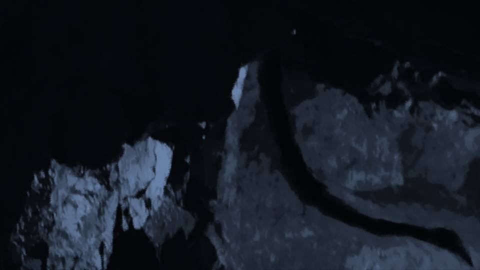
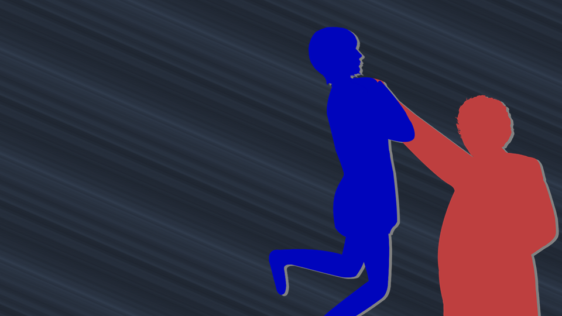
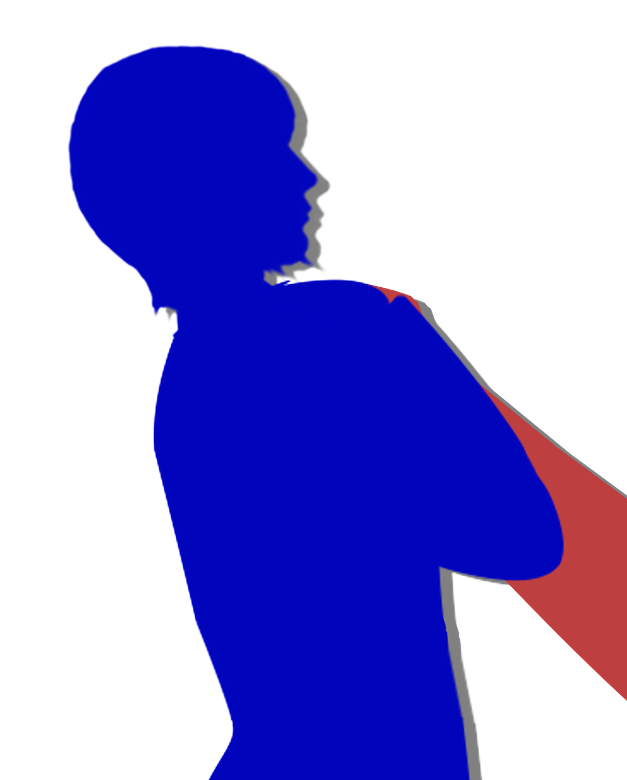
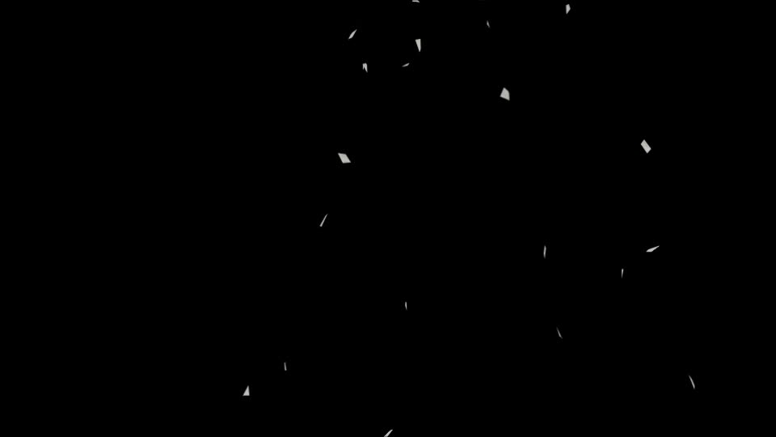
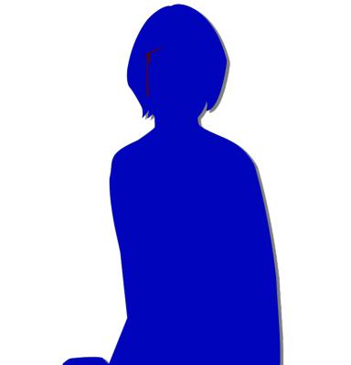
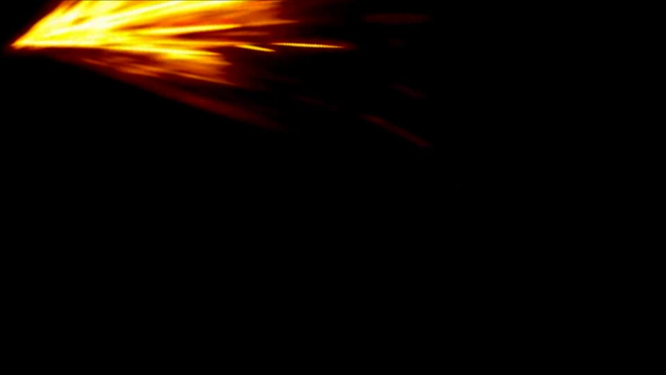
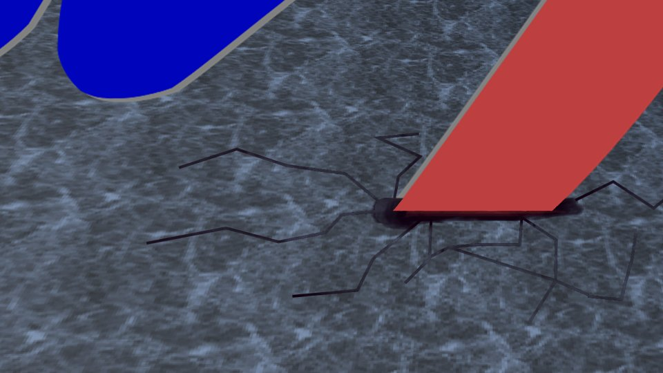
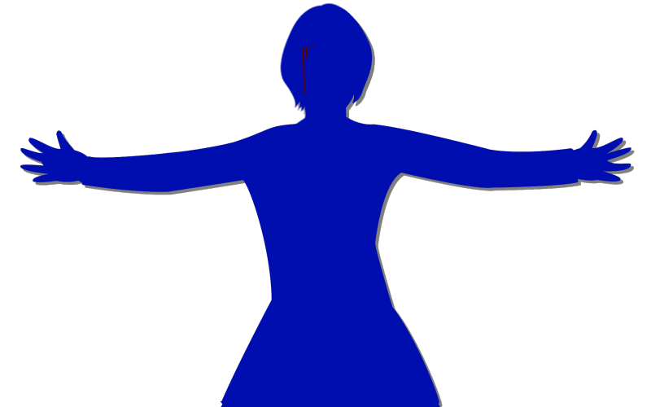
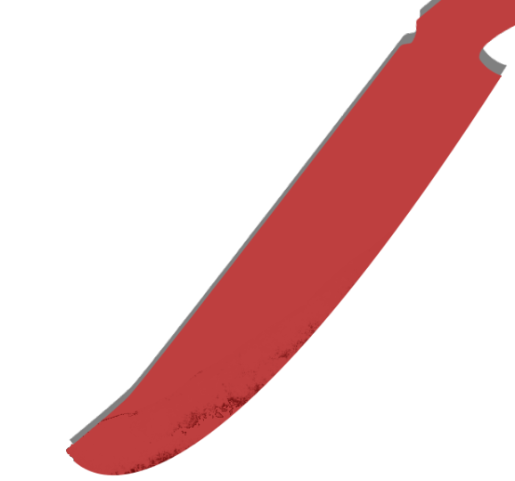

Awakening

Going against the cherry tree's voice―that was never even a possible option.

Kotaro-san lit up the inside with his phone's light, then used matches to light the candle stands set up in the cave.
"Okay, let's go as far in as we can. Kana, you cover the rear."
"Okay, let's go as far in as we can. Kana, you cover the rear."

"Okay, Daddy!"
The three of us from Motoki-cho, sandwiched between Kotaro-san and Kana-chan, made our way through the damp cave.

What's happening up there right now?
Are the residents attacking the three of them?
Or are they still lying in wait, without having faced off with them yet?
Either way, it doesn't change the fact that the three left behind are in danger.
Are the residents attacking the three of them?
Or are they still lying in wait, without having faced off with them yet?
Either way, it doesn't change the fact that the three left behind are in danger.
No... back then, my intuition hadn't sensed danger for anyone.
Which means they must be all right even as things are.
Which means they must be all right even as things are.
............
Huh?
I'd just had a slightly strange thought.
I'd just had a slightly strange thought.

I had sensed the danger to myself and been able to avoid crashing into the fallen tree.
On the other hand, a lot of the residents had been driven off by Chiga-nee.
In other words, the residents had been in danger of getting taken down by Chiga-nee.
And yet I hadn't been able to sense the danger falling on the residents.
On the other hand, a lot of the residents had been driven off by Chiga-nee.
In other words, the residents had been in danger of getting taken down by Chiga-nee.
And yet I hadn't been able to sense the danger falling on the residents.
Oh, I see, it's because they're all wearing Noh masks and red robes.
Dressed like that, you can't tell who anyone is.
So if they're dressed like that...
Dressed like that, you can't tell who anyone is.
So if they're dressed like that...
Hm?
Huh? Something's weird...
I gained my danger sense after being drenched in Ojisan's blood.
If I can identify the person, my danger sense works.
And on top of that, in Arata, people dress like that so no one can be identified.
Huh? Something's weird...
I gained my danger sense after being drenched in Ojisan's blood.
If I can identify the person, my danger sense works.
And on top of that, in Arata, people dress like that so no one can be identified.
They say the reason is so the shinigami won't take them away, but...
Is this a coincidence?
Or does it mean it would be bad for their danger to be foreseen?
Am I overthinking it?
Is this a coincidence?
Or does it mean it would be bad for their danger to be foreseen?
Am I overthinking it?
But it bothers me, oddly.
What is a 'shinigami' in the first place?
I know that's what they call people who have died, but where did the idea of them becoming shinigami come from?
What is a 'shinigami' in the first place?
I know that's what they call people who have died, but where did the idea of them becoming shinigami come from?
Why do shinigami try to take the living away?
At funerals, they stab with a knife smeared with their own blood, and use the falsificaso...
At funerals, they stab with a knife smeared with their own blood, and use the falsificaso...

While I was lost in thought, we arrived in front of those iron bars.
What Goto had said was suspicious: the cobwebs on the iron bars―
Sure enough, only the door part had no cobwebs on it.
Then Kotaro-san took out a key.
What Goto had said was suspicious: the cobwebs on the iron bars―
Sure enough, only the door part had no cobwebs on it.
Then Kotaro-san took out a key.
"Come on, let's go farther in."

"But cave-ins happen a lot here, right? Is it gonna be okay?"
"Only around this door. Farther in, the ground's relatively solid, so it's no problem."
I glanced at Goto.
I glanced at Goto.

―She didn't seem to be thinking about anything in particular...
Or was she? I couldn't tell.

"Everyone, farther in."
Urged on by Kotaro-san, we went through the door.
"Kana, lock it up tight. There's no telling when those guys will show up."


Kana-chan locked it again.
"Okay, now that we've come this far, we're safe. In the back there's a passage that leads out somewhere else.
Pass me the key."
"............"
Kana-chan silently handed Kotaro-san the door key.
"............"
Kana-chan silently handed Kotaro-san the door key.
With Kotaro-san in the lead, we went on deeper in.
But,
But,
"Goto, what's wrong?"

Goto had stopped, staring at the rock wall.
"Senpai, this..."
Where Goto was looking, there was...
"Senpai, this..."
Where Goto was looking, there was...

A bare rock wall.
Goto kept staring at this empty spot.
Goto kept staring at this empty spot.
"Hey, you two, hurry up!"
"Ah, okay. Come on, Goto."
"............"
"Ah, okay. Come on, Goto."
"............"

When we went farther in, there was a space just a little bigger than a school classroom.
Several pots, large and small, sat on the ground.
But it looked like a dead end there. Was there a hidden passage somewhere?
Several pots, large and small, sat on the ground.
But it looked like a dead end there. Was there a hidden passage somewhere?
Looking closely, I saw pale pink flowers placed in a corner by the wall.

New flowers, still fresh and dewy.
Was that the flower called daphne?
Was that the flower called daphne?
"Kotaro-san, where's the passage? Looks like a dead end..."
Haruka looked all around the room.
Haruka looked all around the room.
"Well, of course. This is a dead end."
"Hey, what're you talking about..."
"Hey, what're you talking about..."
Then Goto tugged at my sleeve and Haruka's.
"Kotaro-san, what are you planning to do with my senpai?"
For Goto to say that... it couldn't be...
For Goto to say that... it couldn't be...

"Kuh-heh-heh-heh...
Just what you'd expect of the genius girl, I guess?"
Kotaro-san's voice dropped sharply in tone.
Kotaro-san's voice dropped sharply in tone.

Kotaro-san lit all the candle stands.

"Kotaro-san... what's that supposed to mean?"

When Kotaro-san turned around, he was somehow holding a nata.
"What do I mean...
Necessary, that's what Natsumi-chan is."
Kotaro-san came toward us, grinning.
Kotaro-san came toward us, grinning.
"Well, well, for a while there I didn't know how things would turn out...
When Goto-chan grilled me at breakfast, I'll admit I got nervous.
But somehow I managed to lead you all here."

"Daddy! What are you saying!?"

"Hey, hey, Kana... What are you going to do to Daddy?"
"Did you kill Mommy...?"
"And if I did, what then?"
"You always said... Mommy's killer, if I ever found them, make them go through the same thing...!"
"Did you kill Mommy...?"
"And if I did, what then?"
"You always said... Mommy's killer, if I ever found them, make them go through the same thing...!"
"Kana-chan, you can't do this kind of thing."
"Eri-nee! But Daddy...!"
"You promised me, didn't you? That you wouldn't kill anyone."
"............"
"Eri-nee! But Daddy...!"
"You promised me, didn't you? That you wouldn't kill anyone."
"............"
"Kotaro-san, now that it's come to this, you'll tell us, won't you?
How did you pull off the curse-killings?
There has to be an accomplice."
"You're overthinking it. Nobody managed to trace it back to me, that's all. I'm the one who did them all...!"
"You're overthinking it. Nobody managed to trace it back to me, that's all. I'm the one who did them all...!"

"That's completely impossible! There had to have been an accomplice!"
"Goto-chan... I'll give your brains their due, okay? But this is reality. You suspected me from the start, didn't you? So why not just leave it at that..."
"Goto-chan... I'll give your brains their due, okay? But this is reality. You suspected me from the start, didn't you? So why not just leave it at that..."
"Kotaro-san...
You...
who are you covering for?"
"Covering? So you still suspect there's an accomplice, or some other culprit?"
"Even while you were under watch, the curse-killings still happened. You couldn't have killed anyone then, could you?"
"Covering? So you still suspect there's an accomplice, or some other culprit?"
"Even while you were under watch, the curse-killings still happened. You couldn't have killed anyone then, could you?"
"Haah... this is the trouble with know-it-alls...
Can't stand it unless every last thing goes according to logic?
Look at those guys from before. Every one of them is desperate to get rid of you all.
That's what fear is. Pull the trigger a little, and the rest goes down like dominoes."
"So you're saying that by the time we were watching you, everyone was already under mind control, and you didn't even need to do it with your own hands?"
"Well, that's about it."
"Well, that's about it."
"That's a lie too! A moment ago you said you did it all yourself, and now you're saying other people did it...!"
"Ah, enough. You're so annoying. It doesn't matter either way... Goto-chan and Haruka-chan are going to die here anyway."
"Ah, enough. You're so annoying. It doesn't matter either way... Goto-chan and Haruka-chan are going to die here anyway."
"Daddy! If you're gonna kill Eri-nee and the others, I'll stop you!
Daddy, I can stop you without killing you!"
"Kana... you're strong, I'll give you that.
"Kana... you're strong, I'll give you that.
But can you beat those guys from before?"

Kotaro-san took something long and thin out of his pocket.
Was that... a syringe?
Was that... a syringe?
"Stop!"
But the needle was already in Kotaro-san's arm.
But the needle was already in Kotaro-san's arm.
"For me too...
using this...
is a first.
Now then...
what's it going to feel like...?"

Kotaro-san's breathing grew rough.
Like a wild beast that had found its prey―
Like a wild beast that had found its prey―
It happened in an instant.
The moment I thought Kotaro-san had teleported right before my eyes, Kana-chan collapsed where she stood.
The moment I thought Kotaro-san had teleported right before my eyes, Kana-chan collapsed where she stood.
"Huh, this really is amazing! Even a fatso like me can move faster than Kana!
Kana, you go have a little nap now."
"Run for it!"
Haruka pulled us by the hands.
"Run for it!"
Haruka pulled us by the hands.
"Whoa."
Without giving us time to run, Kotaro-san grabbed Haruka by the collar.
Without giving us time to run, Kotaro-san grabbed Haruka by the collar.

"Hah hah hah! Now this is something! She's light as a doll!"
"Take this! You damn pig!"
Haruka was desperately kicking Kotaro-san in the face.
"Take this! You damn pig!"
Haruka was desperately kicking Kotaro-san in the face.
"That doesn't hurt. Apparently Droga has a strong painkilling effect too.
Haah... I feel really great!"
"Why, you...!"
Haruka swung her leg far back.
"Why, you...!"
Haruka swung her leg far back.
But,


video: 石.wmv"Gah...!"
Haruka's head was ground hard against the ceiling.
Haruka's head was ground hard against the ceiling.
video: 石.wmv
"Hah-haa! Does it hurt? It hurts, doesn't it?"
"Ngh..."
"Ngh..."
video: 石.wmv
"That's it, that's it. You've gotta behave yourself like that.
Haruka-chan, it's about time you picked up some womanly refinement as well."
Kotaro-san hurled Haruka toward the barred door.

"Damn...!"
Haruka had landed on her backside and couldn't get up.
Haruka had landed on her backside and couldn't get up.

"Come on, it's about time you died! My cute little niece!"

video: 鉈火花.wmvKotaro-san swung the nata down at Haruka, slicing through the rock of the ceiling as it went.

But the nata went past Haruka, and a crack split the ground.
Getting hit by something like that would be the end of you.
You wouldn't just be hacked apart. You'd be smashed to bits.
Getting hit by something like that would be the end of you.
You wouldn't just be hacked apart. You'd be smashed to bits.
"Aww, I went to the trouble of sharpening it, and now the blade's chipped.
Well, I'll just bash you flat, then."
Goto was rattling away at the door's lock.

"No use. The key's right here."
Kotaro-san dangled the key, showing it off to us.
Kotaro-san dangled the key, showing it off to us.

"Natsumi, get back! He's after you, it looks like!"
Haruka got up and pushed me back to the door.
Haruka got up and pushed me back to the door.
"Oh? Haruka-chan, you're going to fight me all by yourself? The women of Arata really are brave.
But I'm not here to play, okay?"
But Haruka didn't back down. She stood in his way with her arms spread wide.
But Haruka didn't back down. She stood in his way with her arms spread wide.
"Ah, but you're not one of Arata's people, are you?
Impressive. Is it to protect your little sister?"
"Wh-what are you talking about...!"
"Huh? Nobody's told you yet?
Haruka-chan's adopted. She's really a daughter of the Kogori family, Natsumi-chan's real older sister."
"N-no way!
I-I don't care if Natsumi's my sister, or who I am!
I'm definitely gonna protect Natsumi and the others...!"
"Ha-haa, what a scary face. Honestly, what an annoying brat!"
video: 鉈火花.wmv
And again the nata he swung came down at Haruka, slicing through the rock of the ceiling.
No... I absolutely don't want Haruka to die!
No... I absolutely don't want Haruka to die!

Suddenly, it came back to me.
Back then, I was saved by Haruka―
Back then, I was saved by Haruka―
The next instant, an unbearable, searing pain shot through me.
It had happened in a mere instant, yet the pain signal traveled along my nerve fibers without delay and reached my brain.
It had happened in a mere instant, yet the pain signal traveled along my nerve fibers without delay and reached my brain.

What came into my fading vision―
It was Kotaro-san's nata, covered in blood.
I see... I shielded Haruka without even realizing it.
It was Kotaro-san's nata, covered in blood.
I see... I shielded Haruka without even realizing it.
But I couldn't make sure whether Haruka was safe.
My body... wouldn't move anymore, and I couldn't hear anything...
My body... wouldn't move anymore, and I couldn't hear anything...
I'm sorry, Haruka...
If Haruka really were my older sister... every day would surely be fun, wouldn't it?
If Haruka really were my older sister... every day would surely be fun, wouldn't it?
I wasn't even granted the sight of my life flashing before my eyes before death. My vision had already turned into a dark world.
At least... at the very end... with Haruka... as sisters... a life like a dream... imagining it... as I went...
I couldn't even manage to imagine that much, and my consciousness sank into the dark.
At least... at the very end... with Haruka... as sisters... a life like a dream... imagining it... as I went...
I couldn't even manage to imagine that much, and my consciousness sank into the dark.
Read ✓ Next in this arc →